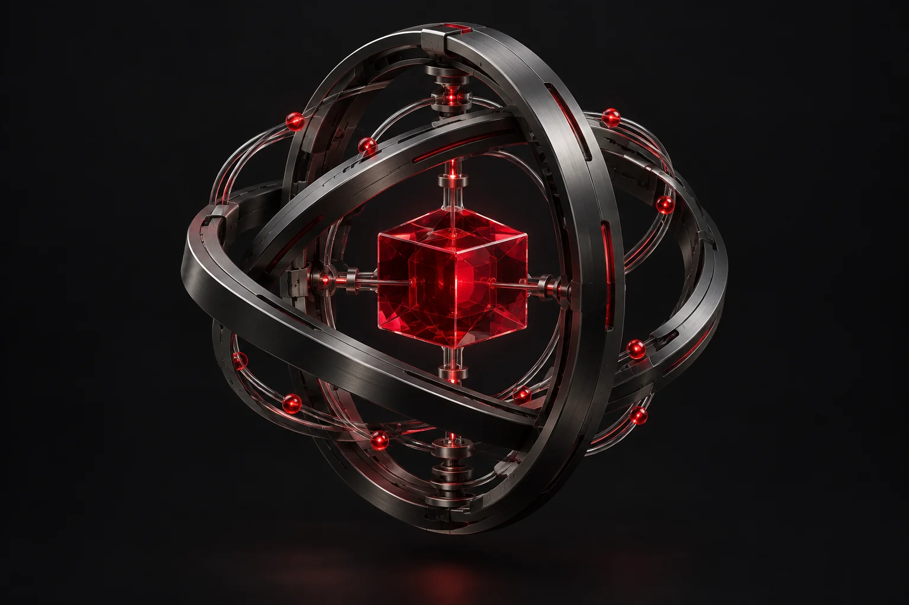

Ya usa IA
de las empresas mexicanas utiliza inteligencia artificial. Un año antes era el 38%.
Unimos marketing, inteligencia artificial y análisis de datos para encender lo que sigue en tu negocio.
Enciende tu negocioAtrae clientes con marketing. Atiéndelos con IA. Dale seguimiento a cada oportunidad.
Conoce el sistemaImplementamos la medición y el análisis para entender qué funciona, dónde se atora y qué hacer después.
Dale sentido a tus datosTu marketing, tu operación y tus datos tienen mucho que decirse.
Somos una agencia de IA y marketing con implementación de análisis de datos. Conectamos estas piezas para que tu negocio tenga una ruta clara: desde el primer clic hasta la siguiente decisión.
Diseñamos la estrategia, hacemos el trabajo y dejamos funcionando las herramientas contigo.
También somos consultores y capacitamos a tu equipo en el uso de IA.
Mira cómo se conecta todoCasi la mitad de las empresas en México ya usa inteligencia artificial, pero la mayoría se quedó en lo básico. La ventaja es para quien la implementa bien y primero.
de las empresas mexicanas utiliza inteligencia artificial. Un año antes era el 38%.
es el resto: las empresas que aún no la incorporan a su trabajo diario.
de las empresas que ya usan IA llegó a una etapa avanzada, con sistemas hechos a su medida.
88% de las empresas que usan IA reporta mejoras de productividad.
49% de las empresas señala la falta de talento calificado como barrera para avanzar. Por eso también capacitamos a tu equipo.
Fuente: estudio Desbloqueando el potencial de la IA en México 2026, elaborado por Strand Partners para Amazon Web Services (AWS), según lo publicado por DPL News (13 ago 2026) e ITSitio (25 ago 2026). El 52% es el complemento del 48% que ya la usa.
Tu equipo conoce el negocio. Mecha conecta la creatividad, la atención y la información para que ese conocimiento llegue más lejos.
Explora cómo trabajaNo importa tu giro. Importa lo que te quita tiempo, clientes o claridad.
Conectamos un asistente a tu WhatsApp para resolver preguntas frecuentes, organizar oportunidades y pasar la conversación a tu equipo cuando haga falta.
Quiero resolver esto¿No está el tuyo? Cuéntanos por WhatsApp ↗
Una presencia que se parece a tu negocio y una estrategia para generar conversaciones con las personas correctas.
Automatizaciones construidas alrededor de tu forma de trabajar, con criterios claros y una persona disponible cuando se necesita.
Implementamos la captura, conexión y análisis de información. La convertimos en preguntas que puedes responder y acciones que puedes ejecutar.
Somos consultores: te decimos dónde sí conviene usar IA en tu negocio y capacitamos a tu equipo para que la aproveche desde el primer día.
¿Qué campaña trae oportunidades? ¿Dónde se pierde el seguimiento? ¿Qué proceso está consumiendo el día? Conectamos la información para que puedas verlo.

Campañas, sitio web y seguimiento de prospectos.
Origen de las conversaciones y avance hacia una oportunidad.
Dónde enfocar el contenido y la inversión en pauta.
Primero definimos qué necesitas saber. Después instrumentamos la medición, validamos las fuentes y construimos el análisis. Los resultados dependen de la información disponible y del alcance acordado.
Así pueden trabajar juntos tu marketing, la IA y tus datos. Recorre este ejemplo para ver qué pasa detrás de cada conversación.
Una campaña o una página bien pensada lleva el interés al canal donde puedes atenderlo.
Estrategia, creatividad e implementación con un mismo equipo.
Revisamos cómo llegan tus clientes, cómo los atiendes y qué información tienes. Identificamos el problema que vale la pena resolver primero.
Definimos alcance, herramientas, entregables y qué vamos a medir. La propuesta parte de tu operación y de tus objetivos.
Producimos el marketing, construimos los flujos e instrumentamos los datos. Probamos contigo antes de integrarlo al trabajo diario.
Revisamos la información, corregimos fricciones y ajustamos la estrategia. Tu equipo conoce cómo usar y dar seguimiento a lo implementado.
El alcance se define contigo. Empezamos por la pieza que más te duele y conectamos el resto conforme tu negocio lo necesite.
Para saber dónde sí conviene usar IA y por dónde empezar.
Para que tu operación deje de vivir en hojas y mensajes.
Para que lo repetitivo se haga solo y tu equipo atienda lo que importa.
Para organizar tu información y convertirla en decisiones concretas.
Marketing y capacitación de tu equipo se suman a cualquier proyecto. Entregables, herramientas de terceros e inversión en anuncios se especifican en cada propuesta.
Somos una agencia nueva en Aguascalientes. Por eso preferimos que lo compruebes antes de comprometerte.
Alcance, entregables y costo claros antes de empezar.
Ves un prototipo o una prueba con tu información antes de usarlo en el día a día.
Tus datos y las cuentas de tus herramientas quedan a nombre de tu negocio.
Sin intermediarios: quienes diseñan tu proyecto son quienes lo construyen.
Fundador
Cofundador
Somos egresados del Tec de Monterrey y fundamos Mecha en Aguascalientes para que las PyMEs mexicanas usen la inteligencia artificial en su operación diaria, no solo en presentaciones. Diseñamos y construimos las apps, automatizaciones y tableros de cada proyecto, y te acompañamos desde el diagnóstico hasta que tu equipo lo usa solo.
EscríbenosTrabajamos con PyMEs mexicanas. El punto de partida es el problema: atención lenta, tareas manuales, marketing sin rumbo o datos difíciles de interpretar. Revisamos tu operación para saber dónde podemos aportar.
Definimos las preguntas que necesita responder tu negocio, identificamos las fuentes, organizamos la información y construimos la medición y los tableros necesarios. Después traducimos el análisis en recomendaciones y acciones.
Primero revisamos lo que ya usas: WhatsApp, hojas de cálculo, agenda, sitio o sistema de ventas. Buscamos aprovecharlo y acordamos contigo cualquier herramienta adicional y su costo.
Sí. Definimos contigo los límites, las preguntas que puede resolver y en qué situaciones debe avisar a tu equipo. La atención humana forma parte del diseño del flujo.
Sí. Podemos iniciar por una prioridad concreta. Diseñamos el primer paso para que tenga sentido hoy y pueda conectarse con marketing, automatización o datos después.
Depende del alcance, las herramientas y el acompañamiento que necesites. Después de conocer tu operación, preparamos una propuesta con entregables, condiciones y costos claros.
Cuéntanos qué está frenando a tu negocio.
Encontramos juntos el
siguiente paso.
¿Prefieres correo? leonardo@agenciamecha.com
Preparamos tu mensaje. Tú decides cuándo enviarlo en WhatsApp.